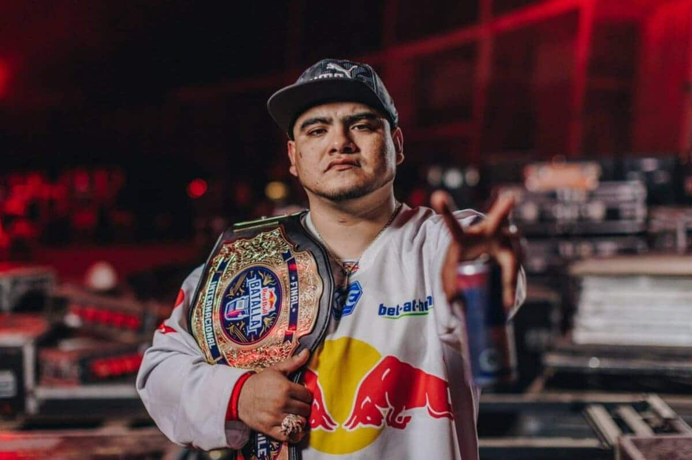
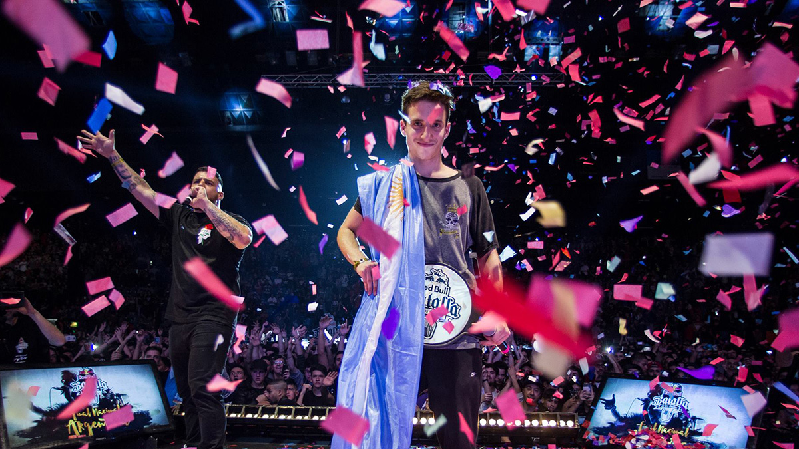
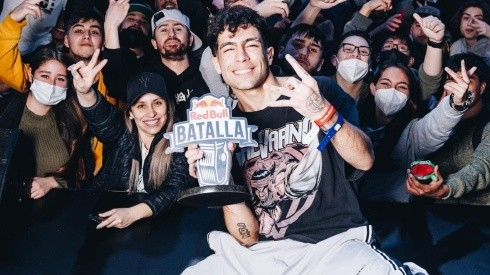
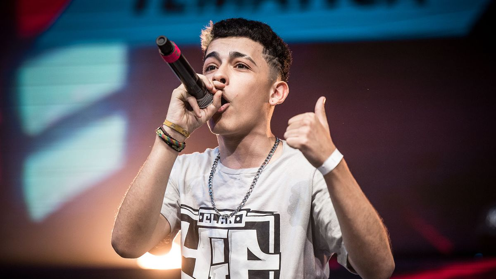
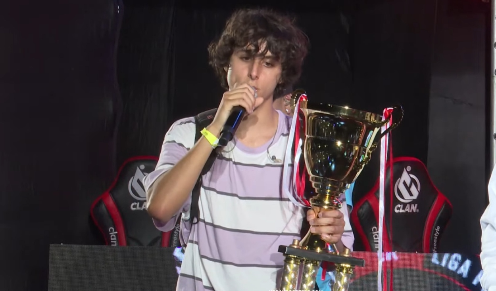

Freestyler Mas Destacados
El mundo del freestyle está lleno de talentos extraordinarios, pero solo unos pocos han logrado dejar una marca imborrable en la cultura. A continuación, te presentamos a algunos de los freestylers más destacados que han redefinido este arte con su habilidad, ingenio y estilo único.
ACZINO
Pais: México
Nombre Real: Mauricio Hernández
Logros: Considerado uno de los mejores freestylers del mundo, Aczino ha ganado múltiples títulos internacionales, incluyendo la Red Bull Batalla de los Gallos en 2017 y 2021. Su estilo agresivo y su capacidad para improvisar rimas complejas en cualquier situación lo han hecho legendario.Estilo: Aczino es conocido por su increíble capacidad de respuesta, su fluidez en las rimas y su dominio del escenario. Su presencia imponente y su habilidad para adaptarse a cualquier rival lo han convertido en una fuerza imparable en las batallas.
WOS
Pais: Argentina
Nombre Real: Valentín OlivaL
Logros: Wos alcanzó la fama internacional al ganar la Red Bull Batalla de los Gallos en 2018. Además, ha sido campeón de la FMS Argentina y ha lanzado una exitosa carrera musical.Wos combina su habilidad para improvisar con una gran sensibilidad artística, lo que le permite conectar profundamente con la audiencia. Su estilo versátil y su carisma lo han convertido en un ícono cultural en Argentina y más allá.
Teorema
Pais: Chile
Nombre Real: Elías Díaz
Logros: Teorema ha sido un pilar de la escena chilena de freestyle y ha representado a su país en múltiples competencias internacionales. Es conocido por su capacidad para improvisar bajo presión.Teorema combina un enfoque agresivo con un profundo conocimiento del rap, lo que le permite abordar cada batalla con una mezcla de pasión y técnica que impresiona tanto a jueces como a espectadores.
Trueno
Pais: Argentina
Nombre Real: Mateo Palacios Corazzina
Logros: Trueno ganó la Red Bull Batalla de los Gallos Argentina en 2019 y la FMS Argentina en la misma temporada. Su carisma y energía en el escenario lo han catapultado al éxito, no solo en el freestyle sino también en su carrera musical.Trueno es conocido por su estilo enérgico y contundente, capaz de dominar la escena con su presencia y sus rimas potentes.
Jaze
Pais: Peru
Nombre Real: Juan Carlos Iwasaki La Cotera
Logros: Jaze ha sido campeón de la FMS Perú y ha demostrado ser uno de los freestylers más completos y versátiles en la escena hispana. Su capacidad para mezclar freestyle con elementos melódicos lo hace único. Jaze destaca por su versatilidad, combinando rimas agresivas con melodías y un estilo más lírico. Su capacidad para adaptarse a diferentes estilos y su creatividad en las improvisaciones lo hacen un MC muy valorado.